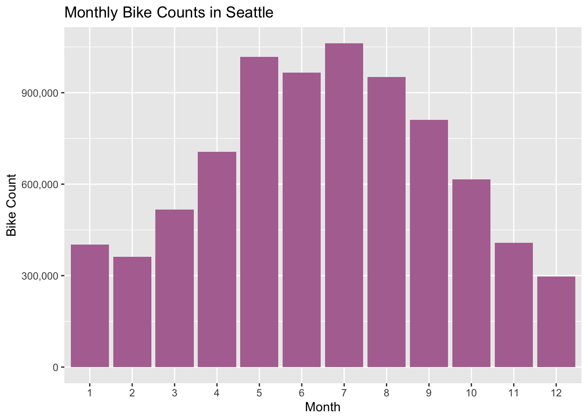
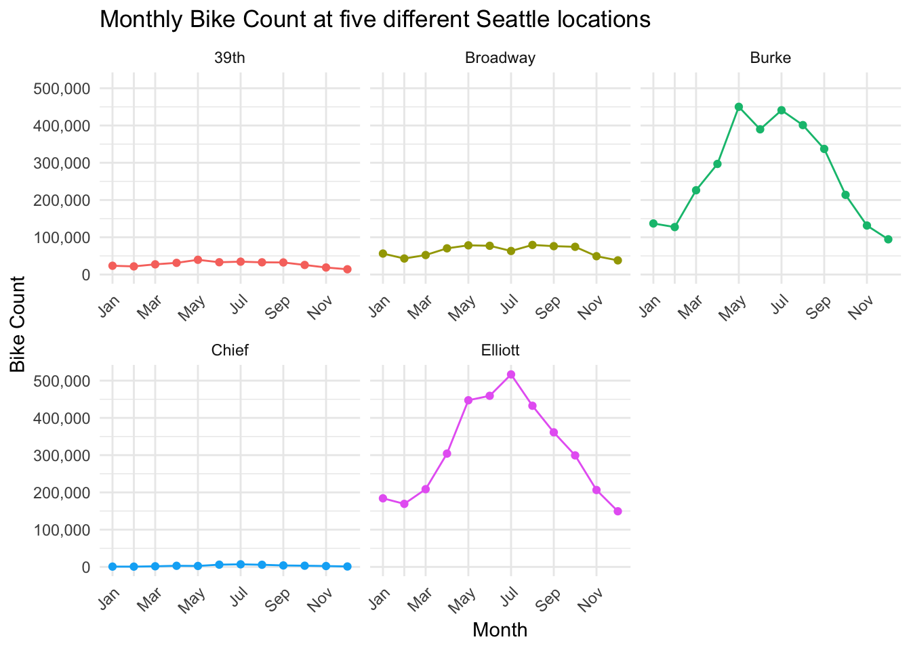
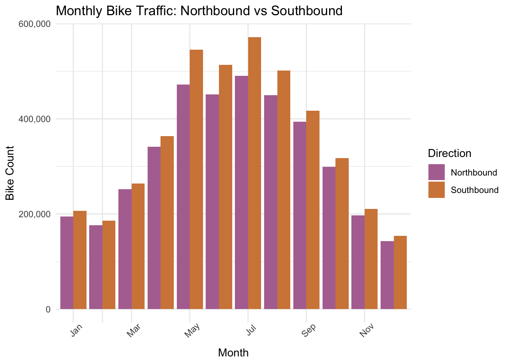
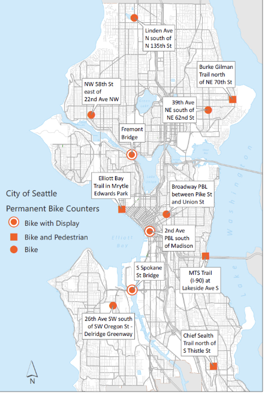

##~~~~~~~~~~~~~~~~~~~~~~~~~~~~~~~~~~~~~~~~~~~~~~~~~~~~~~~~~~~~~~~~~~~~~~~~~~~~~~
## load packages ----
##~~~~~~~~~~~~~~~~~~~~~~~~~~~~~~~~~~~~~~~~~~~~~~~~~~~~~~~~~~~~~~~~~~~~~~~~~~~~~~
library(tidyverse)
library(dplyr)
library(ggplot2)
##~~~~~~~~~~~~~~~~~~~~~~~~~~~~~~~~~~~~~~~~~~~~~~~~~~~~~~~~~~~~~~~~~~~~~~~~~~~~~~
## import data ----
##~~~~~~~~~~~~~~~~~~~~~~~~~~~~~~~~~~~~~~~~~~~~~~~~~~~~~~~~~~~~~~~~~~~~~~~~~~~~~~
thirty_ninth <- read.csv(here::here("raw-data", "39th_Ave_NE_Greenway_at_NE_62nd_St_Bicycle_Counter__Out_of_Service__20240202.csv"))
broadway<- read.csv(here::here("raw-data","Broadway_Cycle_Track_North_Of_E_Union_St_Bicycle_Counter__Out_of_Service__20240202.csv"))
burke <- read.csv(here::here("raw-data","Burke_Gilman_Trail_north_of_NE_70th_St_Bicycle_and_Pedestrian_Counter_20240202.csv"))
chief <- read.csv(here::here("raw-data","Chief_Sealth_Trail_North_of_Thistle_Bicycle_Counter__Out_of_Service__20240202.csv"))
elliott <- read.csv(here::here("raw-data","Elliott_Bay_Trail_in_Myrtle_Edwards_Park_Bicycle_and_Pedestrian_Counter__Out_of_Service__20240202.csv"))
mts <- read.csv(here::here("raw-data","MTS_Trail_west_of_I-90_Bridge_Bicycle_and_Pedestrian_Counter__Out_of_Service__20240202.csv"))
fifty_eight <- read.csv(here::here("raw-data","NW_58th_St_Greenway_at_22nd_Ave_NW_Bicycle_Counter__Out_of_Service__20240202.csv"))HW2-exploration
Part II
Setup
merge data
##~~~~~~~~~~~~~~~~~~~~~~~~~~~~~~~~~~~~~~~~~~~~~~~~~~~~~~~~~~~~~~~~~~~~~~~~~~~~~~
## merge dagta ----
##~~~~~~~~~~~~~~~~~~~~~~~~~~~~~~~~~~~~~~~~~~~~~~~~~~~~~~~~~~~~~~~~~~~~~~~~~~~~~~
# rename total bike column for dataframes with bike only, create total bike column for dataframes with pedestrians ( since we dont want to include pedestrians in our dataframe)
#do this for renaming and totaling schema for all 7 datasets
broadway <- broadway %>% rename("bike_total" = "Broadway.Cycle.Track.North.Of.E.Union.St.Total")
burke$bike_total <- burke$Bike.North + burke$Bike.South
chief$bike_total <- chief$Bike.North + chief$Bike.South
elliott$bike_total <- elliott$Bike.North + elliott$Bike.South
fifty_eight <- fifty_eight %>% rename("bike_total" = "NW.58th.St.Greenway.st.22nd.Ave.NW.Total")
mts$bike_total <- mts$Bike.East + mts$Bike.West
thirty_ninth <- thirty_ninth %>% rename("bike_total" = "X39th.Ave.NE.Greenway.at.NE.62nd.St.Total")
#rename southbound and northbound columns to have consistent naming for all datasets
#add locations column for each dataset with a string of what the location is
#do this renaming and adding column step for all 7 datasets
burke_clean <- burke %>%
rename("SB" = "Bike.South" , "NB" = "Bike.North") %>%
select(Date, bike_total, NB, SB, ) %>%
mutate(loc = "Burke")
chief_clean <- chief %>%
rename("SB" = "Bike.South" , "NB" = "Bike.North") %>%
select(Date, bike_total, NB, SB, ) %>%
mutate(loc = "Chief")
elliott_clean <- elliott %>%
rename("SB" = "Bike.South" , "NB" = "Bike.North") %>%
select(Date, bike_total, NB, SB, ) %>%
mutate(loc = "Elliott")
fifty_eight_clean <- fifty_eight %>%
rename ("EB" = "East", "WB" = "West") %>%
select(Date, bike_total, EB, WB) %>%
mutate(loc = "58th")
thirty_ninth_clean <- thirty_ninth %>%
rename("NB" = "North", "SB" = "South") %>%
select(Date, bike_total, NB, SB) %>%
mutate(loc = "39th")
mts_clean <- mts %>%
rename("WB" = "Bike.West" , "EB" = "Bike.East") %>%
select(Date, bike_total, WB, EB, ) %>%
mutate(loc = "MTS Trail")
broadway_clean <- broadway %>%
mutate(loc = "Broadway")#merge all cleaned dataframes that track north and south traffic
bike_data <- bind_rows(broadway_clean, burke_clean, chief_clean, elliott_clean, thirty_ninth_clean)create filtered dataframes
##~~~~~~~~~~~~~~~~~~~~~~~~~~~~~~~~~~~~~~~~~~~~~~~~~~~~~~~~~~~~~~~~~~~~~~~~~~~~~~
## create filtered data frame ----
##~~~~~~~~~~~~~~~~~~~~~~~~~~~~~~~~~~~~~~~~~~~~~~~~~~~~~~~~~~~~~~~~~~~~~~~~~~~~~~
# update bike data ( base data frame) date column to be in correct format, add year and month column for future filtering ------
#update Date column to type POSIXct for future wrangling, format = current way date column is formatted
bike_data$Date <- as.POSIXct(bike_data$Date, format = "%m/%d/%Y %I:%M:%S %p")
# create year column with year
bike_data$Year <- year(bike_data$Date)
#create month column with month
bike_data$Month <- month(bike_data$Date)
#create a dataframe of daily with the date, location and sum of bike counts for that day (i.e. aggregate hourly counts to be daily)-----
bike_data_daily <- bike_data %>%
#create date column that is aggregated by day
mutate(date = floor_date(Date, unit = "day")) %>%
#group by date and location
group_by(date, loc) %>%
#create new column that has the daily count of bikes at each location each day
summarize(daily_sum = sum(bike_total, na.rm = TRUE), .groups = 'drop') %>%
#drop na values (0)
drop_na()
#create a dataframe that aggregates the monthly bike counts across all locations, should have two columns only ( month, monthly_total)
bike_data_monthly <-bike_data %>%
#group by month
group_by(Month) %>%
#create new column that has the monthly count of bikes at all locations
summarize(monthly_total = sum(bike_total, na.rm = TRUE)) %>%
#drop na values (0)
drop_na()
# create data frame of monthly bike counts at each locations, should have three columns ( month, monthly total, location)
bike_data_monthly_loc <-bike_data %>%
#group by month and location
group_by(Month, loc) %>%
#create new column that has the monthly count of bikes for each location
summarize(monthly_total = sum(bike_total, na.rm = TRUE)) %>%
#drop na values (0)
drop_na()
#create data from that includes monthly north and southbound totals to compare the difference between the two in visualizations
nb_sb<-bike_data %>%
#group by month
group_by(Month) %>%
#create northbound and southbound column that aggregates monthly totals for southbound and northbound each
summarize(Northbound = sum(NB, na.rm = TRUE),
Southbound = sum(SB, na.rm = TRUE)) %>%
#drop na values
drop_na()
#pivot nb_sb data frame to have direction as a column
nb_sb_long <-
#pivot nb_sb longer, utilize the northbound and southbound columns from nb_sb dataframe
pivot_longer(nb_sb, cols = c(Northbound, Southbound),
#put these values in a new column called direction,
#put values in a column called total
names_to = "direction", values_to = "total") %>%
#drop nas
drop_na()plot 1
##~~~~~~~~~~~~~~~~~~~~~~~~~~~~~~~~~~~~~~~~~~~~~~~~~~~~~~~~~~~~~~~~~~~~~~~~~~~~~~
## plot 1 ----
##~~~~~~~~~~~~~~~~~~~~~~~~~~~~~~~~~~~~~~~~~~~~~~~~~~~~~~~~~~~~~~~~~~~~~~~~~~~~~~
#create a basic histogram showing monthly bike counts across all locations and time
#initialize ggplot, month on x axis and count on y axis
ggplot(bike_data_monthly, aes(x = as.factor(Month), y = monthly_total)) +
#add histogram layer, specify color
geom_bar(stat = "identity", fill = "#b2729f") +
#add labels and title
labs(x = "Month", y = "Bike Count", title = "Monthly Bike Counts in Seattle")+
#change y axis values from exponential to having a comma
scale_y_continuous(labels = scales::comma)
plot 2
##~~~~~~~~~~~~~~~~~~~~~~~~~~~~~~~~~~~~~~~~~~~~~~~~~~~~~~~~~~~~~~~~~~~~~~~~~~~~~~
## plot 2 ----
##~~~~~~~~~~~~~~~~~~~~~~~~~~~~~~~~~~~~~~~~~~~~~~~~~~~~~~~~~~~~~~~~~~~~~~~~~~~~~~
#create a lineplot showing bike counts at each location across all time------
# initialize ggplot, month on x axis and count on y axis, group and color by location
ggplot(bike_data_monthly_loc, aes(x = Month, y = monthly_total, group = loc, color = loc)) +
#add line layer
geom_line() +
#add point object to each datapoint
geom_point() +
#create different graph for each location, have x axis labels show on each individual graph
facet_wrap(~loc, scales = "free_x") +
# add labels and title
labs(title = "Monthly Bike Count at five different Seattle locations",
x = "Month",
y = "Bike Count") +
#add minimal theme with white background
theme_minimal() +
#change y axis values from exponential to having a comma
scale_y_continuous(labels = scales::comma)+
#angle x axis labels so they are not cluttered, hjust = 1 to shift labels to the left so they are under the correct datapoint
theme(axis.text.x = element_text(angle = 45, hjust= 1))+
#manually change x axis labels to have every other month showing
scale_x_discrete(limits= c("Jan", " ", "Mar", " ", "May", " ", "Jul", " ", "Sep", " ", "Nov", " "),
labels= c("Jan", " ", "Mar", " ", "May", " ", "Jul", " ", "Sep", " ", "Nov", " "))+
#remove legend since location is titled on each graph
theme(legend.position = "none")
pot 3
##~~~~~~~~~~~~~~~~~~~~~~~~~~~~~~~~~~~~~~~~~~~~~~~~~~~~~~~~~~~~~~~~~~~~~~~~~~~~~~
## plot 3 ----
##~~~~~~~~~~~~~~~~~~~~~~~~~~~~~~~~~~~~~~~~~~~~~~~~~~~~~~~~~~~~~~~~~~~~~~~~~~~~~~
#create a histogram showing the difference in northbound vs southbound traffic -----
# initialize ggplot, month on the x axis, bike count on y, fill by direction
ggplot(nb_sb_long, aes(x = Month, y = total, fill = direction)) +
#create a dodge histogram so different fill values are next to each other
geom_bar(stat = "identity", position = "dodge") +
# add labels, title, and legend title
labs(title = "Monthly Bike Traffic: Northbound vs Southbound",
x = "Month",
y = "Bike Count",
fill = "Direction") +
#add minimal theme with white backgrounds
theme_minimal() +
#manually change x axis labels to have every other month showing
scale_x_discrete(limits= c("Jan", " ", "Mar", " ", "May", " ", "Jul", " ", "Sep", " ", "Nov", " "),
labels= c("Jan", " ", "Mar", " ", "May", " ", "Jul", " ", "Sep", " ", "Nov", " "))+
# angle x axis labels so they are note cluttered
theme(axis.text.x = element_text(angle = 45)) +
#change y axis values from exponential to having a comma
scale_y_continuous(labels = scales::comma)+
#update colors
scale_fill_manual(values = c("#b2729f", "#d38646"))
- What have you learned about your data? Have any potentially interesting patterns emerged? (5-8 sentences)
In doing this excercise, I learned that, despite not having a lot of variables, there are tons of ways to visualize my data. I was not too surprised to learn that biking is significantly more popular in the summer than winter. I also learned that two of my locations seem to be the primary locations, and the other three sites are either not in as popular of areas, or have just not been around for as long. In seeing the size of the dataframe, these sites seemed to still have a significant amount of data ( thousands of rows), but ultimately looked extremely minimal when I plotted them. I was really surprised to learn that there was consistenly more bikers travelling southbound than northbound. The different directions seem to be close in numbers. I expected this because commuters likely travel each way once a day. But, I was very surprised that there was not one month in which there was more northbound travel than southbound.
- In HW #1, you outlined some questions that you wanted to answer using these data. Have you made any strides towards answering those questions? If yes, how so? If no, what next steps do you need to take (e.g. I need to create X plot type, I still need to track down Y data, I need to restructure existing data so that you can visualize it in Z ways, etc.)? (8-12 sentences)
In HW1, I stated my goals as: getting a better idea of how many bikes are on the road, see how bike usage differs across different areas of the city, and visualize how bike usage changes over season. I have already gotten a better idea of how many bikes are on the road. The histogram I created shows that in the peak of all summers (July), there has over 1 million bikes traveling through all 5 of the bike stations. I expected the number to be quite a bit higher. This data spans almost 10 years, from Febuary of 2014 to December of of 2023. A value of almost a million in July means that there has been nearly 1 million bikers counted across all five stations in a span of ten years, an average of 100,000 bikers in July.
My second plot allowed me to see how bike usage varies across the city. I learned that there a two locations that are widely used in northbound and southbound directions, and 3 locations that are not used nearly as much. When comparing to the frequently used stations to the map below, it seems as though these two locations are not near each other, but both near the water. These stations are also both classified as “trails”, which means that perhaps they are mostly used for recreation and not commuting.
My initial histogram also helped me achieve my goal of broadly seeing how bike usage changes over seasons. I was surprised to see January have more counts than December and February. I thought January would be just as, if not colder than the preceding and following month and thus have low counts. I chalked the slight increase in January bike counts up to people having New Years Resolutions of getting outside/ exercising more. My distribution otherwise followed trends that I would expect - more bike activity in the summer months and a decrease towards the second half of the year.

- What challenges do you foresee encountering with your data? These can be data wrangling and / or visualization challenges. (4-6 sentences) I don’t see too many challenges wrangling my data. The data itself is quite simple and I have been able to aggregate it at the daily and monthly level in a fairly efficient manner. I do, however, see myself having challenges regarding visualizing the data to the three different groups, specifically a visualization to be included in a paper, technical documentation, or report. The data itself is quite basic, and I think any title I give a plot would easily tell the viewer what they are looking at. One idea I did have for this plot in particular was to create a sankey diagram showing the different directions traveled. I also think I may have some challenges getting consistent samples of bike data. A lot of the bike stations are now out of service, but still have a lot of data from the past. I think it will be a challenge to come up with a way to accurately represent this data with consistent samples from different locations.